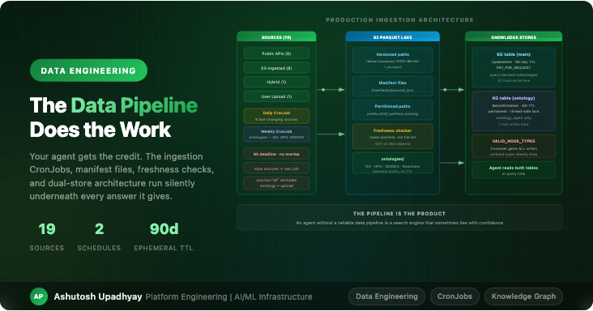

Data EngineeringThe agent gets the credit. The data pipeline does the work. Here's the production ingestion architecture that keeps a 19-source research agent reliable.
Every post about agentic AI systems talks about the model, the tool loop, the reasoning pattern. Nobody writes about the CronJobs.
Those are the things that actually determine whether your agent gives a useful answer. An agent that reasons brilliantly over stale data is worse than an agent that reasons poorly over fresh data — because the bad reasoning is visible and the stale data isn't. Users debug what they can see.
I run a research agent that answers questions about biological datasets: protein expressions, drug response curves, disease associations, pathway memberships, ontology hierarchies. Nineteen distinct sources feed into it. The agent itself is a few thousand lines of tool code. The data pipeline underneath it is what the agent is actually made of.
This post is about that pipeline: the design decisions behind it, the failure modes I learned the hard way, and the patterns that are worth carrying into any agent system that needs to stay current with the real world.
The first useful distinction is temporal. Not all data changes at the same rate, and treating every source the same way creates unnecessary work and unnecessary risk.
Fast-changing sources — experimental results, drug assays, cell line annotations, protein interaction scores — need to run daily. They're the sources users actually depend on for current answers, and being a week stale matters.
Slow-changing sources — biological ontologies, pathway definitions, disease hierarchies — change rarely and predictably. Gene Ontology, HPO, and MONDO release roughly monthly; Reactome releases quarterly. None need daily ingestion. Running them on the same daily job as everything else has two costs: it slows down the daily job, and the two kinds of data have completely different freshness guarantees, so conflating them makes your freshness model wrong.
The solution is two separate jobs with two separate schedules:
# Daily: fast-changing sources — 9 sources, 6h deadline
spec:
schedule: "0 2 * * *"
concurrencyPolicy: Forbid
jobTemplate:
spec:
activeDeadlineSeconds: 21600 # CronJobSpec has no activeDeadlineSeconds — belongs here, under jobTemplate.spec
template:
spec:
containers: [...]
# Weekly: ontologies — run Sunday, no deadline pressure
spec:
schedule: "0 1 * * 0"
concurrencyPolicy: ForbidThe concurrencyPolicy: Forbid on both is not optional. Without it, if a run takes longer than
expected — say, a source API is slow that day — the next scheduled run starts on top of it, and now you have two
ingestion jobs fighting over writes to the same Parquet prefix. The results are non-deterministic in a way
that's hard to debug.
The separation has another benefit: it gives you two different reliability requirements to reason about. If the weekly ontology job fails, the agent still has last week's ontologies. If the daily job fails, the agent has yesterday's drug response data. Both are acceptable degradations, and both are clearly scoped. "Ingestion failed" is a much scarier alert when there's only one job covering everything.
Once you have data in S3, you need a way to know how fresh it is. The naive approach is to list the objects in the prefix and sort by date. This works until your Parquet lake gets large, and then it works slowly and expensively.
The pattern that scales is a manifest file: a small JSON sidecar that each ingestion job writes alongside the data, containing the timestamp, row count, schema version, and any source-specific metadata the freshness check needs.
# Written by the ingestion job at the end of each run
{
"source": "string_interactions",
"ingested_at": "2026-08-07T02:14:31Z",
"row_count": 4823156,
"parquet_path": "s3://bucket/data/string/2026-08-07/interactions.parquet",
"schema_version": "1.2"
}The freshness checker reads the manifest, not the file list. One S3 GET per source instead of a paginated list call. The check is O(1) regardless of how many Parquet files have accumulated.
The manifest also gives you something a file listing never will: row counts. A freshness check that only verifies "a file exists from today" misses the case where the ingestion job ran successfully but the source API returned empty results. A manifest that records row count lets you detect that case and alert on it separately from a job failure.
A trap worth naming: the manifest write must be the last thing the ingestion job does, after all Parquet files are committed. If the job writes the manifest first and then fails mid-write on the data files, your freshness check says everything is fine while your agent quietly reads incomplete data. Treat the manifest as a commit record, not an intent record.
The activeDeadlineSeconds: 21600 on the daily job exists because of a failure I actually hit.
When an ingestion job runs everything sequentially — source A, then B, then C — one slow source at the front of
the queue delays every source behind it. Worse: if that slow source eventually times out and the job keeps
running, the whole job can exceed the next schedule window. The next day's run is now blocked by
concurrencyPolicy: Forbid, and you've just lost two days of freshness for every source.
The activeDeadlineSeconds acts as a circuit breaker: if the job hasn't finished in six hours,
Kubernetes kills it, marks it failed, and leaves the schedule clear for the next day's run. Partial freshness is
better than no freshness and a cascading stale state.
But the real fix is structural, not a timeout: slow sources belong in their own separate
CronJob, not in the daily job at all. If a source routinely takes two hours to ingest, it either
gets its own job with appropriate timing, or it gets excluded from source="all" so users can
request it explicitly but it doesn't block the daily run.
# In the ingestion handler — sources that can't run in the daily job
_BULK_SOURCES = (
"string", "depmap", "cellosaurus", "ncats", "rsc",
# NOT: "ontology" (weekly), NOT: "upload" (user-driven)
# tuple preserves order — fast sources first so a slow tail doesn't block the front
)
def ingest_all_sources():
for source in _BULK_SOURCES: # ontology and upload excluded
_ingest_source(source)This pattern means source="all" is a safe, bounded operation. The ontology job runs on its own
schedule and is never at risk of being blocked by a daily run that ran long.
The second major structural decision is storage separation. Not all data that flows into a knowledge graph is the same kind of data, and treating it uniformly creates problems that compound over time.
Query-derived data — the nodes and edges extracted when a user asks a question — is ephemeral by nature. A drug-protein association extracted from a query this week may be superseded by a new ingestion next week. Keeping it for 90 days and then discarding it is the right behavior. A DynamoDB TTL attribute handles this automatically.
Ontology data — canonical disease terms, gene function annotations, pathway hierarchies — is permanent by design. It's curated controlled vocabulary. Giving it a TTL means it expires and disappears, and the next query that asks "what pathways does this gene belong to" gets back nothing until the weekly job runs again. That's not a freshness issue; that's an availability hole.
The solution is two separate DynamoDB tables with different write patterns:
| Table | Write pattern | TTL | Who writes | Purpose |
|---|---|---|---|---|
kg (main) |
UpdateItem | 90 days | 15 tools (those with KG extractors) | Query-derived facts |
kg-ontology |
BatchWriteItem | None | 1 tool | Permanent ontology facts |
The ontology table uses BatchWriteItem rather than UpdateItem because ontology ingestion is a bulk operation:
loading 40,000 GO terms is faster when batched than when sent as 40,000 individual requests.
BatchWriteItem is not atomic — it does not provide transactional guarantees across the 25-item
batch. (DynamoDB does support ACID transactions via TransactWriteItems, but that is not what
BatchWriteItem provides.) The thread-safe lock serializes shared client-side buffer access across the concurrent
ontology-loading threads.
BatchWriteItem silent-drop trap: BatchWriteItem returns HTTP 200 even when some
writes fail — the unwritten items appear in an UnprocessedItems map in the response. If you
don't check and retry that field, writes are silently dropped with no error. For a job loading 40,000 GO
terms, this is the highest-probability silent-loss path in the whole pipeline.
The silent failure mode: both tables gate writes through a VALID_NODE_TYPES
frozenset. Any node type not in the set is silently dropped — no error, no log. This is intentional (unknown
types shouldn't cause crashes) but dangerous in one direction: if you add a new node type to your code but
forget to add it to the frozenset, all writes of that type succeed with return code 200 and zero rows
stored. The agent then correctly reports "no data found" for queries that should return results. The silence
is the worst part. Always check the frozenset when adding any new data type.
If I were building a new data pipeline for an agent system, these are the five decisions I'd make before writing the first ingestion function:
1. Separate fast and slow sources from the start. The schedule separation is not an optimization you add later — it shapes your freshness model, your failure handling, and your operational load. Build it in early.
2. Manifests before file listing. Write a manifest at the end of every ingestion run. Your freshness checker should read manifests, never list objects. The O(1) vs O(n) difference becomes real at scale, and the row count in the manifest catches empty-result failures that file listing never will.
3. Budget the deadline before you commit it. Add up the worst-case runtime of every source in your daily job and check that it fits inside your deadline with margin. If it doesn't, split off slow sources before the deadline starts being violated randomly.
4. Two stores if your data has two retention policies. If some of your data should persist forever and some should expire, putting them in the same table forces you to choose one TTL setting and live with the wrong answer for one category. Tables are cheap; data availability holes are not.
5. Define your VALID_NODE_TYPES frozenset before you write your first node. Silent drops are the hardest bugs to catch in a knowledge graph system. The frozenset is a contract; define it explicitly and gate everything behind it.
The unglamorous truth: when a user says "the agent gave me the wrong answer," the first thing I check is not the reasoning trace. It's the manifest. Was the source fresh? Did the ingestion job complete? Were row counts non-zero? In my experience, more wrong answers come from stale or incomplete data than from model reasoning errors. A great model cannot fix bad data. A mediocre model with fresh, complete data gives you something to work with.
The pipeline architecture I run today handles 19 sources across two schedules, writes to two separate stores with different retention policies, uses manifest files for O(1) freshness checks, and has explicit guards against slow sources blocking fast ones. None of it is clever. All of it is necessary.
The agent that runs on top of it answers questions with current data because the pipeline has done its job correctly, invisibly, every night. The pipeline doesn't get mentioned in demos. It gets mentioned in postmortems when it fails. Build it like it matters, because it does.
activeDeadlineSeconds is a circuit breaker, not a target. The real fix
for slow sources is a separate CronJob, not a longer timeout.